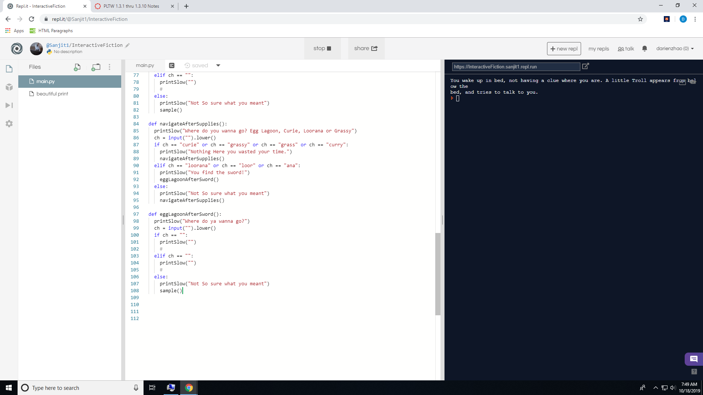
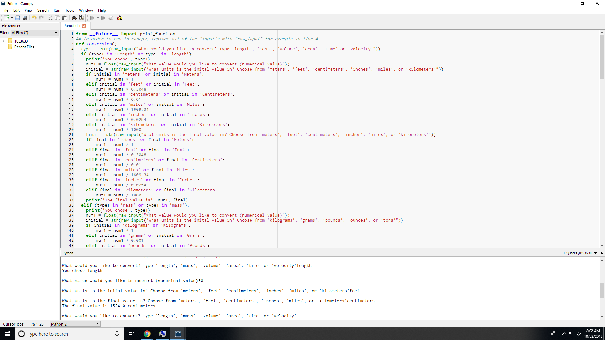

Portfolio

This is our scratch game that we created.
You can control the car by using the arrow or the aswd keys.
If any car touches the black border the car gets sent back to the start.


This is the virtual ping pong game that our group created using MIT APP Inventor.
The controls are just to touch where you want the paddle to go.
The game can count your score and when the ball hits any of the walls the tablet will vibrate.
The game ends when the ball touches the bottom wall.

This is our Interactive Fiction game that our group created.
Our overall topic is Overcoming the monster and our title is The Dragon and the Troll.
Our game has seven decisions you can make and even has a few easter eggs.

This is the Unit converter that our group created in Canopy.
Our converter can convert length, mass, volume, area, time and velocity.
This is our scratch game that we created. You can control the car by using the arrow or the aswd keys. If any car touches the black border the car gets sent back to the start.
This is the virtual ping pong game that our group created using MIT APP Inventor.
The controls are just to touch where you want the paddle to go.
The game can count your score and when the ball hits any of the walls the tablet will vibrate.
The game ends when the ball touches the bottom wall.
This is our Interactive Fiction game that our group created. Our overall topic is Overcoming the monster and our title is The Dragon and the Troll. Our game has seven decisions you can make and even has a few easter eggs.
This is the Unit converter that our group created in Canopy.
Our converter can convert length, mass, volume, area, time and velocity.